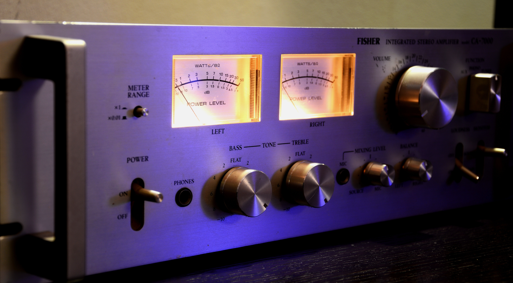

The Vinyl vs. Digital Experience
Sound Quality
The powerful comeback of vinyl records is undeniable, but does it actually sound better? Because vinyl is an analog format, it most certainly provides a more accurate reproduction of the original audio than the traditional audio cd. While lossles digital audio formats now exist, they are uncommon and even still they lose some of the warmth and depth of sound of vinyl records. A lot of digital audio is also mastered differently than audio pressed to vinyl and much of the dynamic depth is lost. Curse to the loudness wars! Finally, even though the pop and crackle of a record are imperfections, there is something comforting about dropping a needle and hearing those sounds over you favorite track.
Art
With the rise of the mp3 and especially with the decline of the CD we are losing out on one of my favorite aspects of music: the accompanying artwork! Vinyl jackets and sleeves (and even many physical vinyls themselves!) have contributed greatly to pop art and culture throughout the years. Without the the physical media, many artists now use worthless art to market their music and many don't even bother at all :( Check out some historically significant album artwork along with some of my personal favorites below.